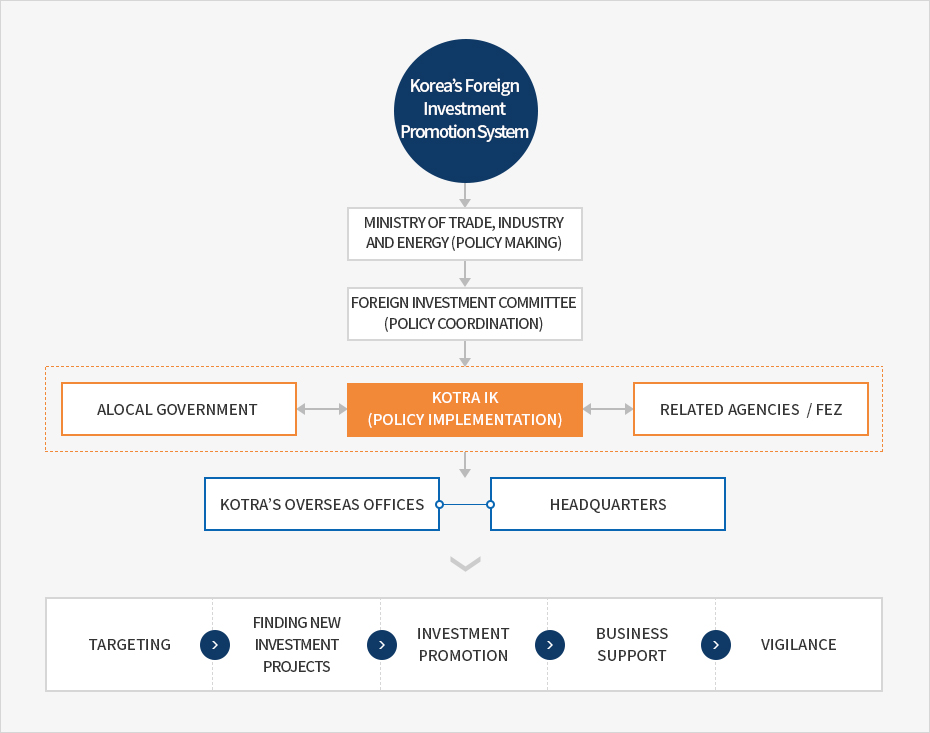

Invest Korea
- Home
- IK Services
- Introduction of IK
- Invest Korea
Invest KOREA
Invest KOREA (IK) is a national investment promotion agency whose aim is to support the establishment of foreign businesses in Korea. The agency was established as part of the Korea Investment Promotion Agency (KOTRA).IK promotes Korea’s investment environment abroad and provides comprehensive services to foreign companies ranging from consultations, notifications of investments, establishment of corporations, support for business activities, and complaint handling in Korea.
Intro to Invest Korea
Invest KOREA (IK) staff members consist of KOTRA employees, specialists, public officials dispatched from related government ministries and agencies, and experts from the private sector, all who have extensive knowledge and experiences in the field of foreign investment.
IK cooperates closely with 36 overseas investment-focused offices. IK works on foreign investment policies formulated by the Ministry of Trade, Industry and Energy and the Foreign Investment Committee.


Korea's Foreign Investment Promotion System
- MINISTRY OF TRADE, INDUSTRY AND ENERGY (POLICY MAKING)
- FOREIGN INVESTMENT COMMITTEE (POLICY COORDINATION)
- A LOCAL GOVERNMENT ↔ KOTRA IK (POLICY IMPLEMENTATION) ↔ RELATED AGENCIES / FEZ
- KOTRA'S OVERSEAS OFFICES, HEADQUARTERS
-
- TARGETING
- FINDING NEW INVESTMENT PROJECTS
- INVESTMENT PROMOTION
- BUSINESS SUPPORT
- VIGILANCE

KOTRA’s Overseas Offices Dedicated to Investment
IK has 36 overseas offices and 64 investment promotion specialists around the world to assist and attract foreign investment to Korea. Overseas offices work as points of contact with potential foreign investors by providing a range of information related to investment in Korea and carrying out a variety of investment promotion activities, such as investor relations sessions.
History
-
2015
- Jan - Foreign Investment Ombudsman oversees the Investment Aftercare Division
-
2012
- Feb - Foreign Investor Support Office opens
-
2010
- Aug - The function of research is added to Invest KOREA's mission
-
2009
- Invest KOREA ranked 1st among APEC countries for investment promotion websites by the Foreign Investment Advisory Service under the World Bank.
-
2006
- Nov - Invest Korea Plaza, a foreign business incubation center, opens
-
2003
- Dec - The KISC is re-launched as Invest KOREA
-
1999
- Oct - Office of the Foreign Investment Ombudsman opens
-
1998
- Jul - The Korea Investment Service Center (KISC) is established at KOTRA.
- Apr - The government designated KOTRA as the national investment promotion agency of Korea.
-
1995
- Aug - KOTRA added supporting function for attracting foreign investment